What is an OBS Scene Collection?¶
Scene Collections handle the various overlays, artifacts, and logos that appear on screen. They can be:
- Imported/exported between computers
- Created from scratch
This guide covers both methods.
What are Scenes?¶
In OBS, a "scene" is a collection of sources such as
- video feeds
- images
- overlays
- text
These are arranged and layered to create a specific layout for your broadcast.
Each scene can be switched live during a stream, allowing you to transition between different camera angles, graphics, or content setups seamlessly.
Scenes are essential for organizing your stream's visual elements and making your production look professional.
Below is an typical completed scene setup, showing all the scenes used for a typical competition stream:
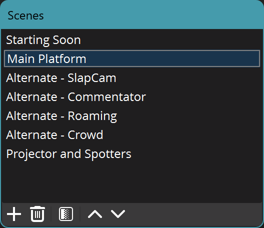
What are Sources?¶
In OBS, a "source" is any input that you add to a scene such as
- a video capture device
- images
- text
- browser window
- audio input
Sources are the building blocks of each scene, and you can layer, resize, crop, and filter them to create your desired layout. Each scene can have multiple sources, and sources can be reused across different scenes for efficiency and consistency.
Below is an example showing the typical sources used in the main competition platform scene:
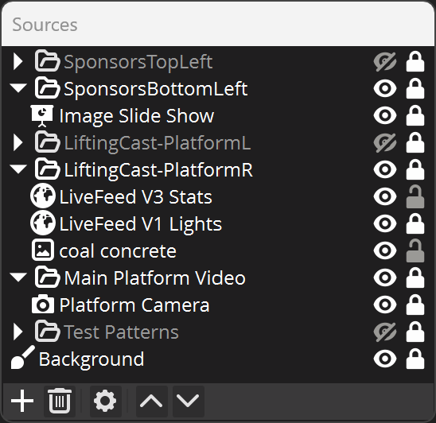
What are Groups?¶
Below is an example of how the groupings of source elements are linked to elements on the broadcast 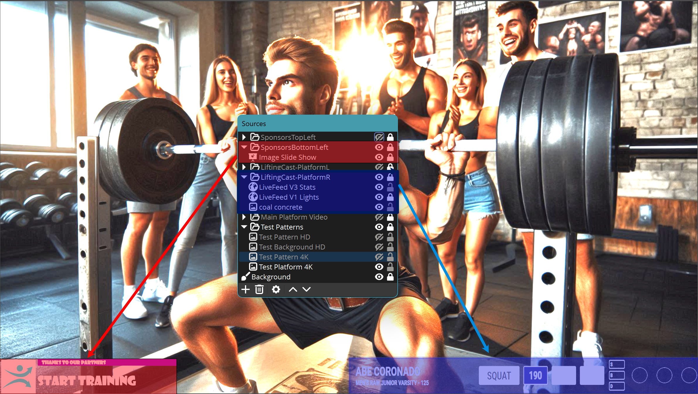
Elements, or Groups of Elements can be hidden or un-hidden to create different layouts within the same Scene in this example 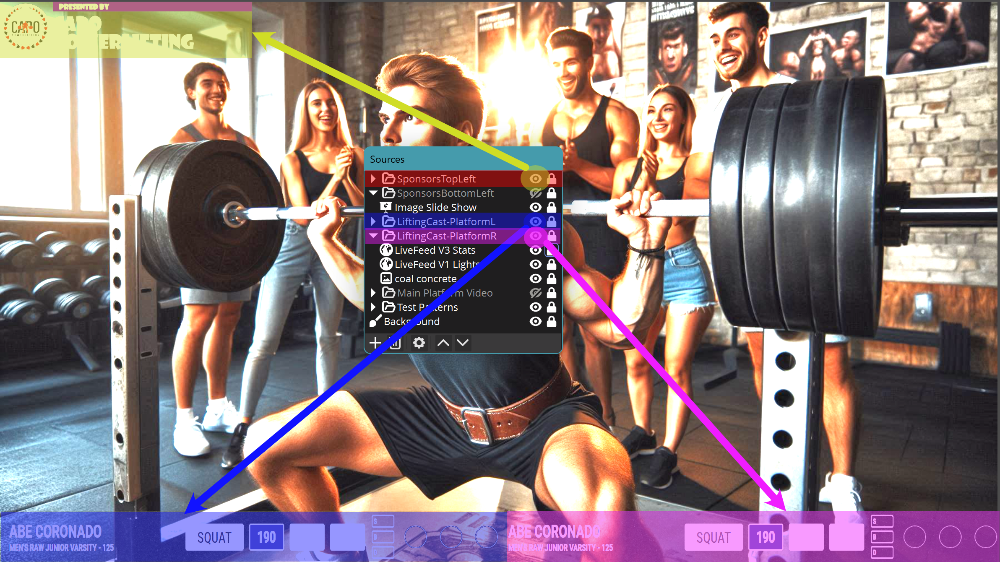
What are Transforms?¶
In OBS, transforms are tools that let you adjust the position, size, rotation, and cropping of any source within a scene. Using transforms, you can move sources around the canvas, scale them up or down, rotate them to any angle, and crop out unwanted parts of a video or image. This is especially useful for fine-tuning the layout of your broadcast, ensuring that every element fits perfectly on screen. Transforms are accessed by right-clicking a source and selecting 'Transform' or by using the bounding box handles in the preview window.
Positional Alignments¶
Positional Alignments are somewhat tricky to understand without a reference picture, however:
- They make the placement of an object exact when using Canvas resolution scaled numbers
- no need to rely on the precise mouse movements on a canvas, just simple maths
- Transforms can be copied from one source or group to another source, speeding up changes
When a Positional Alignment is changed:
- it will appear that the object moves in a somewhat random location
- this is an illusion due to the default location as the starting point
- the point of reference (or anchor) is shown in the circle in the diagrams below
- Understanding Transforms is critical to repeatable Scene setup
Below is the graphic representation of each Positional Alignment (With OBS' US spelling).
Positional Alignment |
Illusionary Movement | OBS Screenshot |
|---|---|---|
| Top Left This is the default or 'reset' value, all other alignments have to be set |
Default Location | 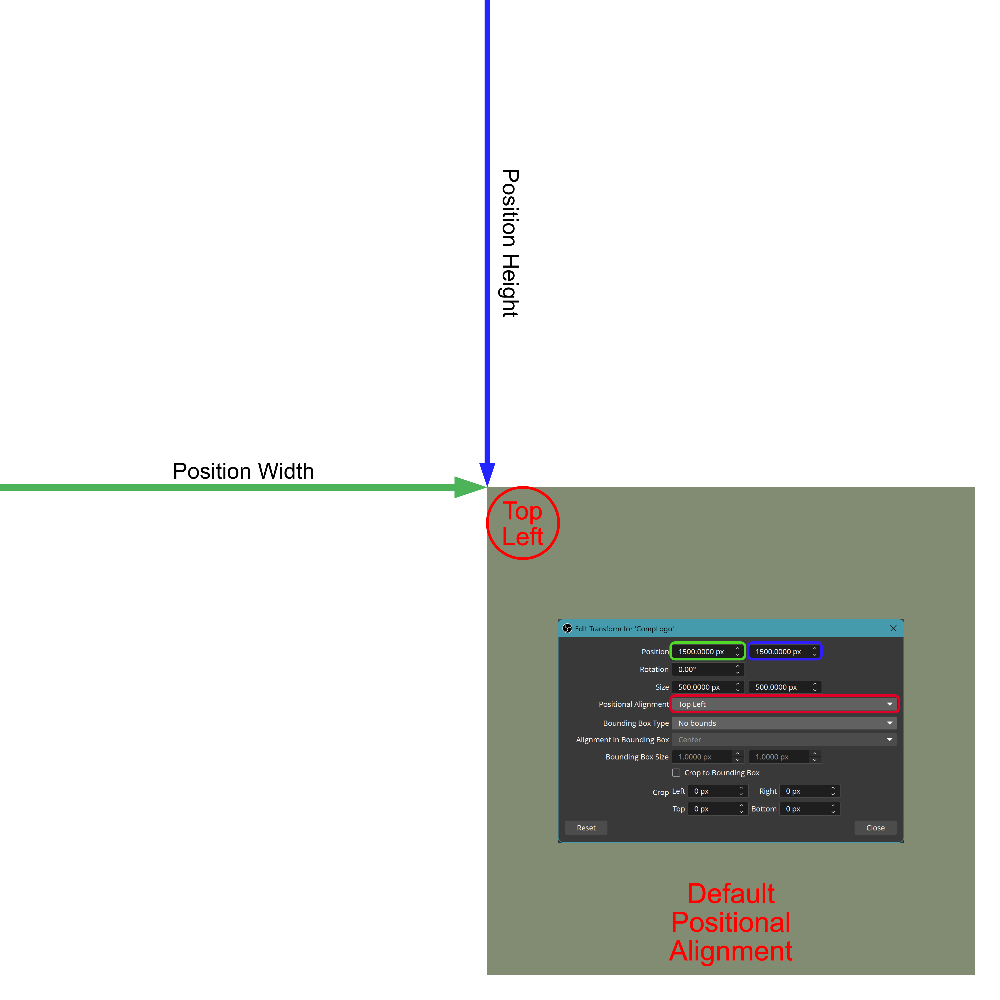 |
| Top Center | The object will appear to shift to the half-left of the default location |
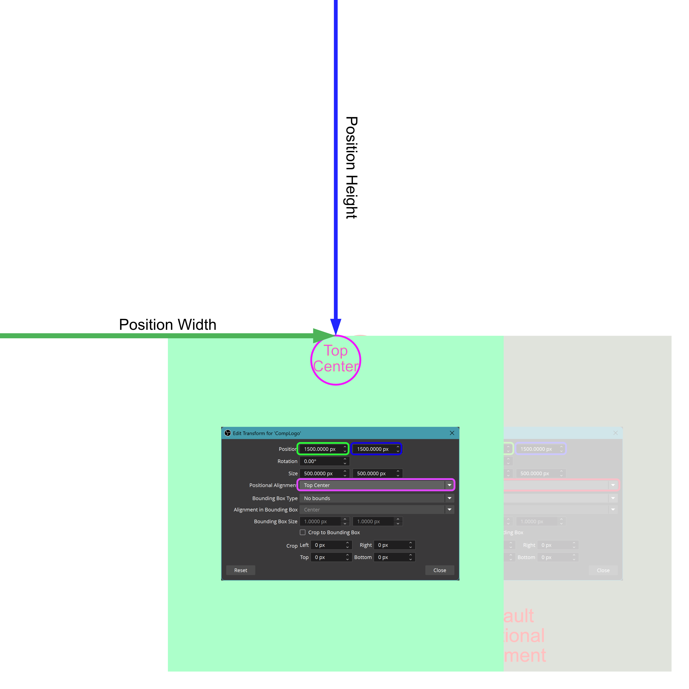 |
| Top Right | The object will appear to shift to the left of the default location |
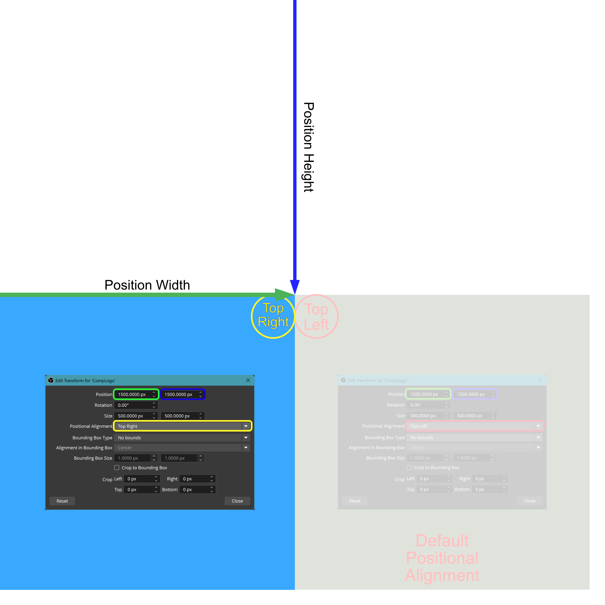 |
| Center Right | The object will appear to shift to the left and half-up of the default location |
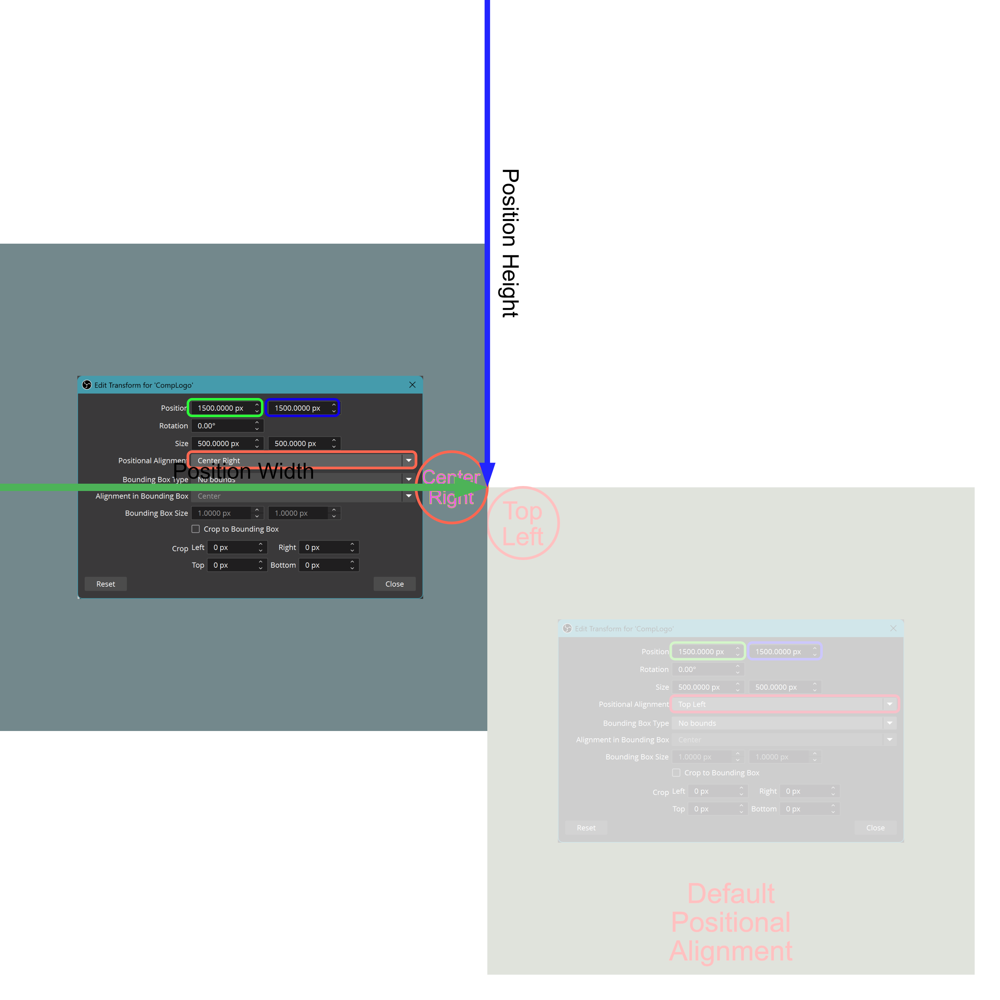 |
| Bottom Right | The object will appear to shift to the diagonal up and left of the default location |
 |
| Bottom Center | The object will appear to shift to the half-left and up of the default location |
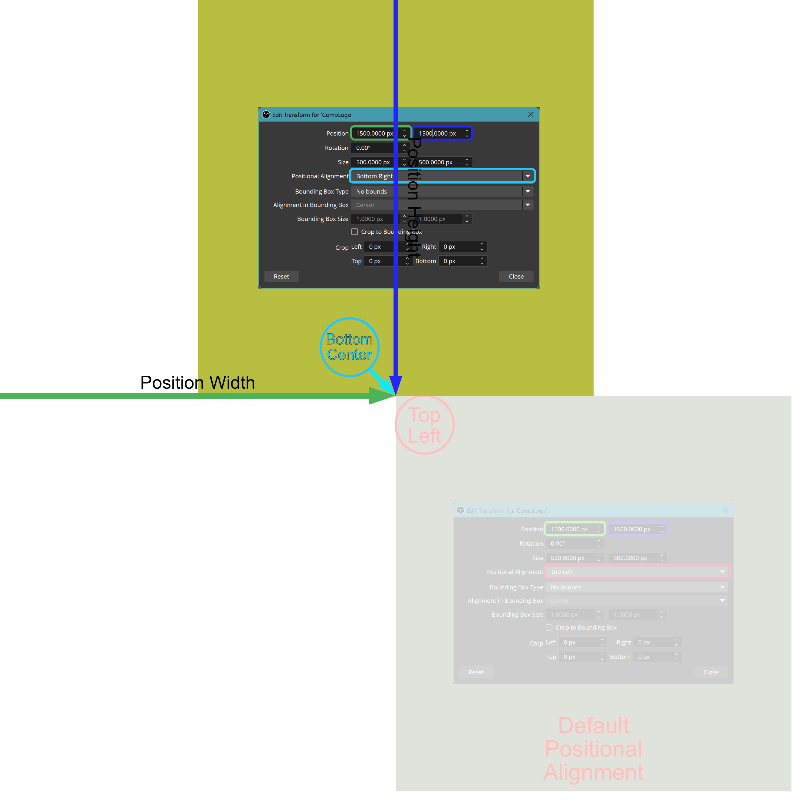 |
| Bottom Left | The object will appear to shift up of the default location |
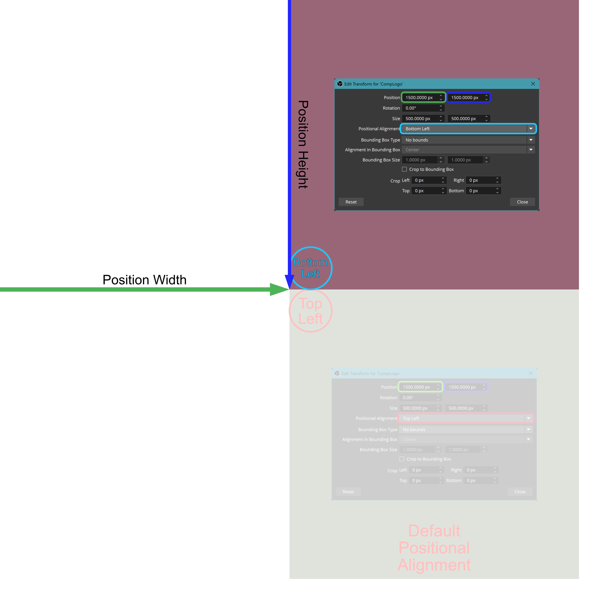 |
| Center Left | The object will appear to shift half-up of the default location |
 |
| Center | The object will appear to shift to the half-left and half-up of the default location |
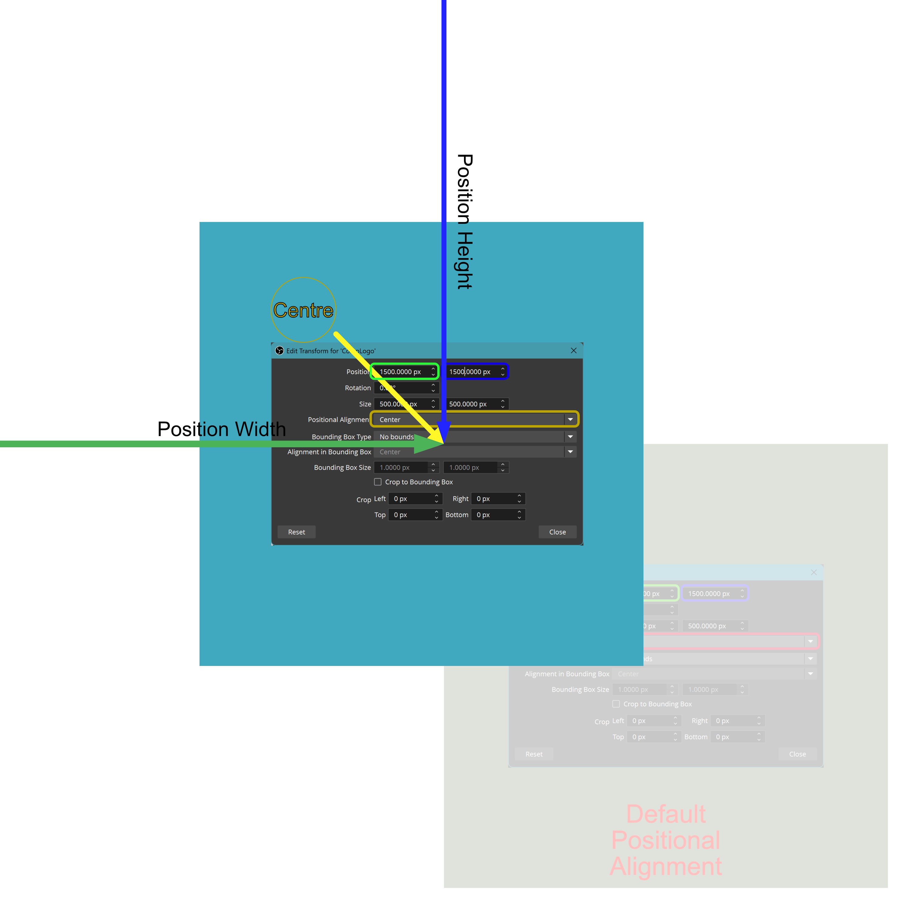 |
What are Filters?¶
In OBS, filters are effects or adjustments that you can apply to individual sources, groups, or audio/video feeds to enhance or modify their appearance and sound. Common video filters include color correction (to adjust brightness, contrast, and color balance), chroma key (for green screen effects), and crop/pad (to trim or expand the visible area). Audio filters can include noise suppression, gain, and compression to improve sound quality. Filters are essential for fine-tuning your stream's look and feel, ensuring that each source appears as intended and that audio is clear and balanced.
What are Transitions?¶
In OBS, a transition is an animated effect that occurs when switching from one scene to another. Transitions help create a smooth and professional viewing experience by fading, sliding, or animating between different layouts or camera angles. You can choose from built-in transitions like Fade, Cut, and Swipe, or customize your own to match the style of your broadcast. Transitions are especially useful for live events, as they make scene changes less abrupt and more visually appealing.
You can also use transitions on individual sources or groups within a scene. For example, swipe transitions can be applied to specific overlays, graphics, or stats panels, allowing elements to smoothly slide in or out of view without changing the entire scene. This technique is useful for dynamically showing or hiding information during a broadcast, such as bringing up competitor stats or sponsor logos only when needed.
Import an Existing Scene Collection¶
- File → Scene Collection → Import
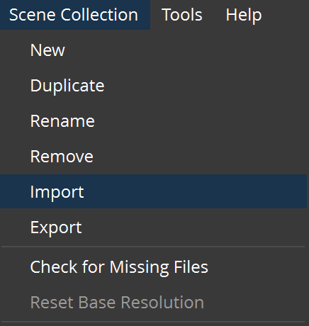
-
Select 'Add' 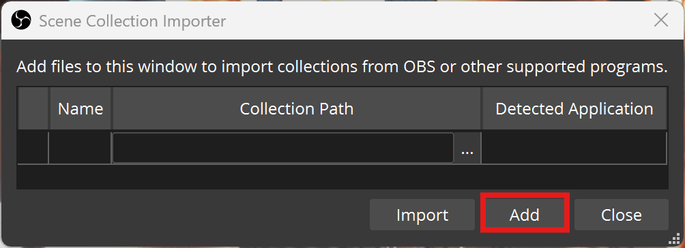
-
Locate the shared OneDrive Location 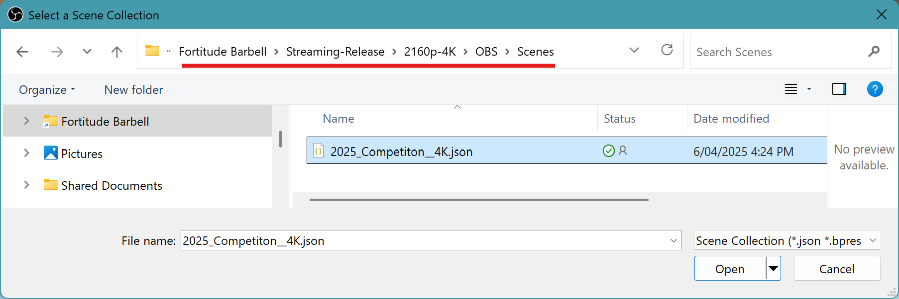
Create a New Scene Collection¶
- File → Scene Collection → New
- Enter a descriptive name (e.g., "FB_Competition_4K")
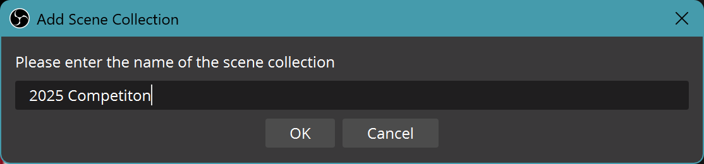